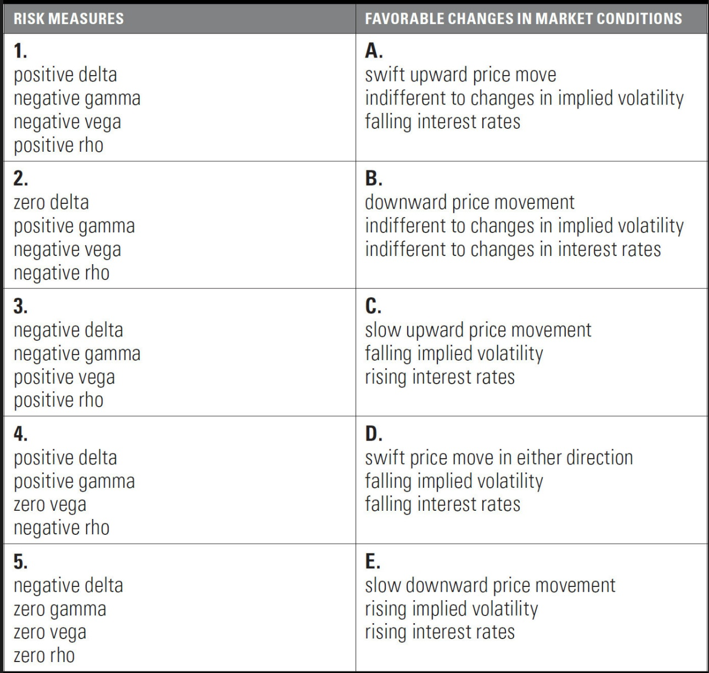

Chapter 7: Risk Measurement I
Summary
This chapter was regarding the option greeks. The greeks are essentially the partial derivatives of the option contract value.
Delta is the partial derivative of the Option contract value with respect to the underlying price change. It has a value from [0,1]
for calls and [-1,0] for puts. The sign of delta regarding the traders position represents which direction of motion the trader
wants the position to go. Positive delta wanting a price increase, negative wanting a delta price decrease.
Gamma is the derivative of the delta with respect to the underlying price change. For going long on both calls and puts gamma is
always positive as the tangent line to the delta curve for either position is positive. Gamma is seen as the magnitude of price change.
A positive gamma wants a swift increase in price as negative wants the price change to be slow or at a standstill.
Theta is the partial derivative of the Option contract value with respect to time. When long on a call or put theta
is a negative as the time value decays and decreases the overall value of the option contract. Being a seller theta is positive in that
the trader is collection the theta decay.
Vega is the partial derivative of the Option contract value with respect to change in implied volatility. Both Calls and Puts
increase in value as implied volatility increases.
Rho is the partial derivative of the Option contract value with respect to change in risk free interest rates.
The chapter does not utilize calculus as all of the independent variables (greeks) change incrementally rather than at an infinitely small sizes.
Exercise problems:
1. Match each risk measure with the correct definition:
\[
\begin{array}{|l|l|}
\hline
\text{Risk Measure} & \text{Definition} \\
\hline
\textbf{1.}\text{ Theta} & \textbf{A.}\text{The sensitivity of an option's theoretical value to a change in volatility} \\
\hline
\textbf{2.}\text{ Gamma} & \textbf{B.}\text{The sensitivity of an option's theoretical value to a change in the underlying price} \\
\hline
\hline
\textbf{3.}\text{ Rho} & \textbf{C.}\text{The sensitivity of an option's delta to a change in the underlying price} \\
\hline
\hline
\textbf{4.}\text{ Vega} & \textbf{D.}\text{The sensitivity of an option's theoretical value to a change in interest rates} \\
\hline
\hline
\textbf{5.}\text{ Delta} & \textbf{E.}\text{The sensitivity of an option's theoretical value to the passage of time} \\
\hline
\end{array}
\]
Answer:
$$ \textbf{1.} E ,\textbf{2.} C ,\textbf{3.} D ,\textbf{4.} A, \textbf{5.} B $$
2. For stock options, which risk measure can be used to estimate the sensitivity of an option's value to a change in dividend?
Answer:
$$ \text{Delta, given that delta is the partial derivative of the option value with respect to movement in the underlying asset,} $$
$$ \text{a cut/raise of
dividends will have the largest impact on the underlying asset price and therefore delta.} $$
3. For each option value and delta below, to the nearest .01 estimate the option's new value if the underlying
price changes by the given amount.
Answer:
\[
\begin{array}{|c|c|c|c|c|}
\hline
\text{} & \text{Current Option Value} & \text{Delta (Whole Number Format)} & \text{Underlying Price Change} & \text{New Option Value}\\
\hline
\textbf{a.} &\text{ 10.25} & \text{60} & \text{+0.40} & \text{10.49}\\
\hline
\textbf{b.} &\text{ 24.60} & \text{-44} & \text{-5.20} & \text{26.89}\\
\hline
\hline
\textbf{c.} &\text{ 5.41} & \text{27} & \text{-2.30} & \text{4.79}\\
\hline
\hline
\textbf{d.} &\text{ 51.40} & \text{-15} & \text{+13.68} & \text{49.35}\\
\hline
\hline
\textbf{e.} &\text{ 1.24} & \text{72} & \text{+0.18} & \text{1.37}\\
\hline
\hline
\textbf{f.} &\text{ 8.90} & \text{-85} & \text{-5.25} & \text{13.36}\\
\hline
\end{array}
\]
Which of the above options are calls, and which are puts?
$$\text{a.Call, b.Put, c.Call, d.Put, e.Call, f.Put} $$
4. As the underlying price changes, the delta will change by an amount indicated by the gamma, where the gamma
is expressed as the change in the delta per one point change in the underlying price. To approximate the change in an option's value
as the underlying price changes, we can use the average delta for the given price change.
For each option delta and gamma below, estimate the option's new delta if the underlying price changes by the given amount. Then,
using the option's average delta, to the nearest .01 estimate the option's new value if the underlying price changes by the given
amount. (Delta and gamma are both given in the whole number format.)
Answer:
\[
\begin{array}{|c|c|c|c|c|c|c|}
\hline
\text{} & \text{Current Option Value } & \text{Delta} & \text{Gamma} & \text{Underlying Price Change} & \text{New Option Delta} & \text{New Option Value}\\
\hline
\textbf{a.} &\text{ 4.58} & \text{57} & \text{4} & \text{+3.00} & \text{69} & \text{6.47} \\
\hline
\textbf{b.} &\text{ 1.70} & \text{-39} & \text{7} & \text{-0.94} & \text{-45.58} & \text{2.10}\\
\hline
\hline
\textbf{c.} &\text{ 4.94} & \text{28} & \text{1.1} & \text{-8.50} & \text{18.65} & \text{2.96}\\
\hline
\hline
\textbf{d.} &\text{ 10.09} & \text{-83} & \text{2.8} & \text{-6.75} & \text{-100} & \text{16.27}\\
\hline
\hline
\textbf{e.} &\text{ 0.58} & \text{21} & \text{6.5} & \text{-3.70} & \text{0} & \text{0.19}\\
\hline
\hline
\textbf{f.} &\text{ 3.95} & \text{-12} & \text{0.3} & \text{+18.20} & \text{-6.54} & \text{2.26}\\
\hline
\end{array}
\]
$$ \text{Calculating new delta: } \Delta_{new} = \Delta_{old} \times \gamma $$
$$ \text{Calculating New Option Value: } O_{f} = O_{i} + \Delta_{avg} \times Underlying Price Change $$
$$ \text{New option value is calculated using } \Delta_{avg} \text{ as it is more accurate being that delta is not constant as underlying} $$
$$ \text{price changes. Gamma is the change in delta with 1 point move in underling price.} $$
$$ \text{Gamma is utilized to calculate a more acurate delta } \Delta_{avg} \text{ which is then used to find new option value.} $$
5.
Theta is usually expressed as the change in an option's value per one day's passage of time.
Vega is usually expressed as the change in an option's value per one percentage point change in volatility.
Rho is usually expressed as the change in an option's value per one percentage point change in interest rates.
For each option value, risk measure, and change in market conditions below, to the nearest .01 estimate the option's new value.
Answer:
\[
\begin{array}{|c|c|c|c|c|}
\hline
\text{} & \text{Option Value } & \text{Risk Measure} & \text{Change in Market Conditions} & \text{New Option Value} \\
\hline
\textbf{a.} &\text{ 5.18} & \text{theta = -0.95} & \text{2 days pass} & \text{4.99}\\
\hline
\textbf{b.} &\text{ 0.67} & \text{vega = .047} & \text{volatility rises 3.2%} & \text{0.82} \\
\hline
\hline
\textbf{c.} &\text{ 22.75} & \text{rho = -.177} & \text{interest rates rise 2.90%} & \text{22.24} \\
\hline
\hline
\textbf{d.} &\text{ 1.64} & \text{theta = -.024} & \text{13 days pass} & \text{1.33} \\
\hline
\hline
\textbf{e.} &\text{ 12.10} & \text{vega = .232} & \text{volatility falls 5.6%} & \text{10.80} \\
\hline
\hline
\textbf{f.} &\text{ 3.99} & \text{rho = .088} & \text{interest rates fall 1.67%} & \text{3.84} \\
\hline
\end{array}
\]
$$ \text{How to calculate new option value } 0_{f} \text{ when market conditions change for } \theta \text{, vega, } \rho $$
$$ \text{When risk measure is theta: } O_{f} = O_{i} + \text{(days passed)} \times \theta$$
$$ \text{When risk measure is vega: } O_{f} = O_{i} + \text{[vol rise(+) or fall(-)]} \times vega$$
$$ \text{When risk measure is rho: } O_{f} = O_{i} + \text{[interest rate rise(+) or fall(-)]} \times \rho$$
6. For each option and set of risk measures below, to the nearest .01 what will be the options new price
if the given changes in market conditions occur?
a.
current option price = 4.55
delta = 62 (whole number format)
gamma = 4.4 (whole number format)
vega = .13
The underlying price falls by 3.28 and implied volatility rises by 2.6 percentage points.
$$ O_{i} = 4.55, \Delta = 62, \theta = 0.13, \alpha = (S_{2} - S_{1}) = -3.28, vol = +2.6\text{%} $$
$$ P_{\Delta} = \overline{\Delta} \times \alpha = -1.80 $$
$$ P_{vega} = vega \times vol =+0.34 $$
$$ O_{f} = O_{i} + P_{\Delta} + P_{vega} $$
$$ O_{f} = 4.55 - 1.80 + 0.34 = 3.09 $$
b.
current option price = 8.87
theta = -.199
rho = -.135
Six days pass with no change in the underlying price and interest rates fall 1.20 percentage points (120 basis points).
$$ O_{i} = 8.87, \theta = -.199, \rho = -.135 $$
$$ P_{\theta} = (days passed) \times \theta = -1.19 $$
$$ P_{\rho} = \rho \times \text{(rise/fall interest rate)} = +0.16 $$
$$ O_{f} = O_{i} + P_{\theta} + P_{rho} $$
$$ O_{f} = 8.87 -1.19 + .16 = 7.84 $$
c.
current option price = 4.73
delta = 43 (whole number format)
vega = .217
theta = -.027
rho = .142
Four days pass, implied volatility falls 1.75 percentage points, interest rates rise .75 percentage points, and the dividend is
increased by .37 (this is a stock option).
$$ O_{i} = 4.73, \Delta = 43, vega = .217, \theta = -.027, \rho = .142, div = +.37, vol = -1.75, int = +.75 $$
$$ P_{\Delta} = \overline{\Delta} \times div = -0.16 $$
$$ P_{vega} = vega \times vol = -0.38 $$
$$ P_{\theta} = (days passed) \times \theta = -0.11 $$
$$ P_{\rho} = \rho \times int = +0.11 $$
$$ O_{f} = O_{i} + P_{\Delta} + P_{vega} + P_{\theta} + P_{\rho} = 4.19 $$
7. Complete each of the following statements:
Answer:
a. A position with a positive delta wants: the underlying price to increase.
b. A position with a negative gamma wants: the underlying to sit still or move slowly.
c. A position with a negative rho wants: Interest rates to fall.
d. A position with a positive vega wants: volatility to go up.
e. A position with a positive gamma wants: very large or swift movements.
f. A position with a positive delta and negative gamma wants: a slow increase in price.
8. Complete each statement below with either "increase in value" or "decline in value".
Answer:
a. If the underlying price remains unchanged, as time passes a position with a negative theta will:
Decline in value
b. If the underlying price remains unchanged, as time passes a position with a positive gamma will:
Decline in value
c. If interest rates fall, a position with a negative rho will:
Increase in value
d. If implied volatility falls, a position with a negative vega will:
Increase in value
e. If the underlying price makes a large move, a position with a positive theta will:
Decline in value
f. If the underlying price makes a large move, a position with a positive gamma will:
Increase in value
9. Fill in each blank with either "long" or "short".
Answer:
a. A trader who buys calls has a Short theta position.
b. A trader who sells puts has a Long delta position.
c. A trader who sells puts has a Short gamma position.
d. A trader who sells calls has a Short vega position.
e. A trader who buys stock option puts has a Short rho position.
f. A trader who sells puts has a Long theta position.
g. A trader who buys puts has a Long vega position.
h. A trader who sells stock option calls has a Short rho position.
i. A trader who buys calls has a Long gamma position.
10. Match each set of risk measures below with the set of conditions that will most work in the position's favor.

Answer:
$$ \textbf{1.} C ,\textbf{2.} D ,\textbf{3.} E ,\textbf{4.} A, \textbf{5.} B $$
11.
\[
\begin{array}{|l|l|l|l|l|l|}
\hline
\text{Option} & \text{Delta} & \text{Gamma} & \text{Theta} & \text{Vega} & \text{Rho} \\
\hline
\text{June 65 Call} &\text{79} & \text{4.2} & \text{-.0190} & \text{.100} & \text{.121}\\
\hline
\text{June 70 Call} &\text{52} & \text{5.8} & \text{-.0205} & \text{.137} & \text{.083}\\
\hline
\hline
\text{June 75 Call} &\text{26} & \text{4.7} & \text{-.0152} & \text{.112} & \text{.043}\\
\hline
\hline
\text{June 65 Put} &\text{-21} & \text{4.2} & \text{-.0084} & \text{.100} & \text{.039}\\
\hline
\hline
\text{June 70 Put} &\text{-48} & \text{5.8} & \text{-.0092} & \text{.137} & \text{-.089}\\
\hline
\hline
\text{June 75 Put} &\text{-74} & \text{4.7} & \text{-.0030} & \text{.112} & \text{-.142}\\
\hline
\end{array}
\]
From the evaluation table above, a trader has the following positions:
+3 underlying contracts
+5 June 65 Calls, -8 June 65 Puts
-6 June 70 Calls, -11 June 70 Puts
-14 June 75 Calls, +6 June 75 Puts
a. What is the trader's total...
$$ \text{delta position} = \Sigma P_{i} \times \Delta_{i} , \text{Where } P_{i} \text{ is position quantity} $$ $$ \text{delta position} = 3 \times 100 + 5 \times 79 + (-6) \times 52 + (-14) \times + (-8) \times (-21) + (-11) \times (-48) + 6 \times (-74) = 271 $$
$$ \text{gamma position} = \Sigma P_{i} \times \Gamma_{i} , \text{Where } P_{i} \text{ is position quantity} $$ $$ \text{gamma position} = -148.8 $$
$$ \text{theta position} = \Sigma P_{i} \times \theta_{i} , \text{Where } P_{i} \text{ is position quantity} $$ $$ \text{theta position} = 0.39 $$
$$ \text{vega position} = \Sigma P_{i} \times vega_{i} , \text{Where } P_{i} \text{ is position quantity} $$ $$ \text{vega position} = -3.53 $$
$$ \text{Slow movement up in price, decrease in implied volatility, and decrease in interest rates} $$